A Benchmark for the Evaluation of RGB-D SLAM Systems
Jurgen Sturm ¨ 1, Nikolas Engelhard2, Felix Endres2, Wolfram Burgard2, and Daniel Cremers1
Abstract— In this paper, we present a novel benchmark for the evaluation of RGB-D SLAM systems. We recorded a large set of image sequences from a Microsoft Kinect with highly accurate and time-synchronized ground truth camera poses from a motion capture system. The sequences contain both the color and depth images in full sensor resolution (640 × 480) at video frame rate (30 Hz). The ground-truth trajectory was obtained from a motion-capture system with eight high-speed tracking cameras (100 Hz). The dataset consists of 39 sequences that were recorded in an office environment and an industrial hall. The dataset covers a large variety of scenes and camera motions. We provide sequences for debugging with slow motions as well as longer trajectories with and without loop closures. Most sequences were recorded from a handheld Kinect with unconstrained 6-DOF motions but we also provide sequences from a Kinect mounted on a Pioneer 3 robot that was manually navigated through a cluttered indoor environment. To stimulate the comparison of different approaches, we provide automatic evaluation tools both for the evaluation of drift of visual odometry systems and the global pose error of SLAM systems. The benchmark website [1] contains all data, detailed descriptions of the scenes, specifications of the data formats, sample code, and evaluation tools.
I. INTRODUCTION
Public datasets and benchmarks greatly support the scientific evaluation and objective comparison of algorithms. Several examples of successful benchmarks in the area computer vision have demonstrated that common datasets and clear evaluation metrics can significantly help to push the stateof-the-art forward. One highly relevant problem in robotics is the so-called simultaneous localization (SLAM) problem where the goal is to both recover the camera trajectory and the map from sensor data. The SLAM problem has been investigated in great detail for sensors such as sonar, laser, cameras, and time-of-flight sensors. Recently, novel low-cost RGB-D sensors such as the Kinect became available, and the first SLAM systems using these sensors have already appeared [2]–[4]. Other algorithms focus on fusing depth maps to a coherent 3D model [5]. Yet, the accuracy of the computed 3D model heavily depends on how accurate one can determine the individual camera poses.
With this dataset, we provide a complete benchmark that can be used to evaluate visual SLAM and odometry systems on RGB-D data. To stimulate comparison, we propose two evaluation metrics and provide automatic evaluation tools.
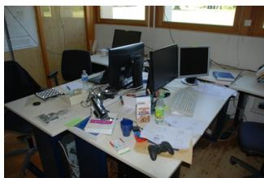
(a) Office scene (“fr1”)
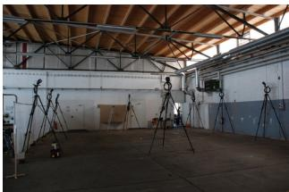
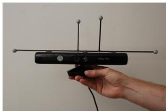
(c) Handheld Kinect sensor with reflective markers
(b) Industrial hall (“fr2”)
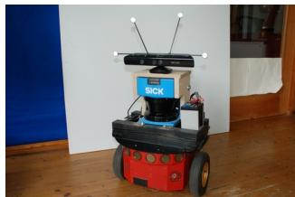
(d) Pioneer robot with Kinect sensor
Fig. 1. We present a large dataset for the evaluation of RGB-D SLAM systems in (a) a typical office environment and (b) an industrial hall. We obtained the ground truth camera position from a motion capture system using reflective markers on (c) a hand-held and (d) a robot-mounted Kinect sensor.
Our dataset consists of 39 sequences that we recorded in two different indoor environments. Each sequence contains the color and depth images, as well as the ground truth trajectory from the motion capture system. We carefully calibrated and time-synchronized the Kinect sensor to the motion capture system. After calibration, we measured the accuracy of the motion capture system to validate the calibration. All data is available online under the Creative Commons Attribution license (CC-BY 3.0) at
The website contains—next to additional information about the data formats, calibration data, and example code—videos for simple visual inspection of the dataset.
II. RELATED WORK
The simultaneous localization and mapping (or structurefrom-motion) problem has a long history both in robotics [6]–[12] and in computer vision [9], [13]–[16]. Different sensor modalities have been explored in the past, including 2D laser scanners [17], [18], 3D scanners [19]– [21], monocular cameras [9], [14]–[16], [22]–[24], stereo systems [25], [26] and recently RGB-D sensors such as the Microsoft Kinect [2]–[4].
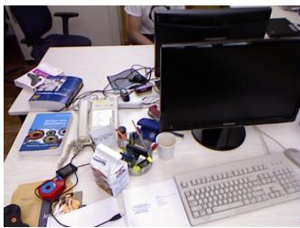
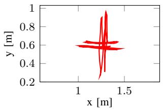
(a) fr1/xyz
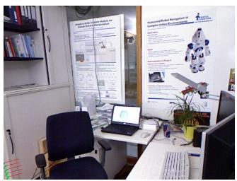
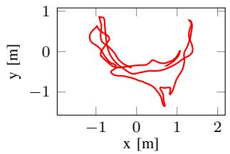
(b) fr1/room
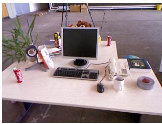
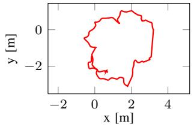
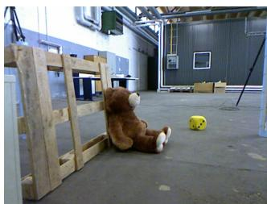
(c) fr2/desk
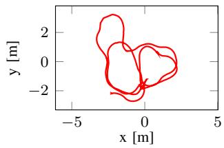
(d) fr2/slam
Fig. 2. Four examples of sequences contained in our dataset. Whereas the top row shows an example image, the bottom row shows the ground truth trajectory. The fr1/xyz sequence contains isolated motions along the coordinate axes, fr1/room and fr2/desk are sequences with several loop closures in two different office scenes, and fr2/slam was recorded from a Kinect mounted on a Pioneer 3 robot in a search-and-rescue scenario.
For laser- and camera-based SLAM systems, there are several well-known datasets such as the Freiburg, Intel, Rawseeds and Newcollege datasets [27]–[29]. Geiger et al. [30] recently presented a benchmark for visual odometry from stereo images with ground truth poses. However the depth maps are not provided so that an additional preprocessing step is required. Pomerleau et al. [31] recorded a dataset with untextured point clouds from a Kinect in a motion capture studio. Also related is the work of Bao et al. [32] who aimed at the evaluation of semantic mapping and localization methods. However, in their dataset the camera poses were estimated from the color images of the Kinect, so that the ground truth is not accurate enough for our purpose. To the best of our knowledge, our dataset is therefore the first RGB-D dataset suitable for the evaluation of visual SLAM (and visual odometry) systems, as it contains both color and depth images and associated ground truth camera poses. An earlier version of our benchmark was presented recently [33]. Inspired from the feedback we received, we extended the original dataset with dynamic sequences, longer trajectories, and sequences recorded from a Kinect mounted on a mobile robot.
Next to the data itself, a suitable evaluation metric is required for the benchmarking of SLAM solutions. One common evaluation metric that does not even require a ground truth is to measure the intrinsic errors after map optimization, such as the re-projection errors or, more generally, the error [12], [34]. However, obviously low errors do not guarantee a good map or an accurate estimate of the trajectory, as trivially not using any sensor data leads to zero error. From a practical viewpoint, we therefore advocate— similar to Olson et al. [34]—to evaluate the end-to-end performance of the whole system by comparing its output (map or trajectory) with the ground truth. The map can for example be evaluated by overlaying it onto the floor plan and searching for differences. Although, in principle, difference images between the two maps can be computed automatically [35], the performance is often only judged visually by searching for thin structures, kinks or ghosts like double walls.
The alternative to map comparison is to evaluate a SLAM system by comparing the estimated camera motion against the true trajectory. Two frequently employed methods are the relative pose error (RPE) and the absolute trajectory error (ATE). The RPE measures the difference between the estimated motion and the true motion. It can either be used to evaluate the drift of a visual odometry system [36] or the accuracy at loop closures of SLAM systems [37], [38] which is especially useful if only sparse, relative relations are available as ground truth. Instead of evaluating relative poses differences, the ATE first aligns the two trajectories and then evaluates directly the absolute pose differences. This method is well suited for the evaluation of visual SLAM systems [34], [39] but requires that absolute ground truth poses are available. As we provide dense and absolute ground truth trajectories, both metrics are applicable. For both measures, we provide a reference implementation that computes the respective error given the estimated and the ground truth trajectory.
In this paper, we present a novel benchmark for the evaluation of visual SLAM and visual odometry systems on RGB-D data. Inspired from successful benchmarks in computer vision such as the Middlebury optical flow dataset [40] and the KITTI vision benchmark suite [30], we split out dataset into a training and a testing part. While the training sequences are fully available for offline evaluation, the testing sequences can only be evaluated on the benchmark website [1] to avoid over-fitting.
III. DATASET
The Kinect sensor consists of an near-infrared laser that projects a refraction pattern on the scene, an infrared camera that observes this pattern, and a color camera in between. As the projected pattern is known, it is possible to compute the disparity using block matching techniques. Note that image rectification and block matching is implemented in hardware and happens internally in the sensor.
We acquired a large set of data sequences containing both RGB-D data from the Kinect and ground truth pose estimates from the motion capture system. We recorded these trajectories both in a typical office environment (“fr1”, and in a large industrial hall (“fr2”, 10 × 12m2) as depicted in Fig. 1. In most of these recordings, we used a handheld Kinect to browse through the scene. Furthermore, we recorded additional sequences with a Kinect mounted on a wheeled robot. Table I summarizes statistics over the 19 training sequences, and Fig. 2 shows images of four of them along with the corresponding camera trajectory. On average, the camera speeds of the fr1 sequences are higher than those of fr2. Except otherwise noted, we ensured that each sequence contains several loop closures to allow SLAM systems to recognize previously visited areas and use this to reduce camera drift. We grouped the recorded sequences into the categories “Calibration”, “Testing and Debugging”, “Handheld SLAM”, and “Robot SLAM”.
In the following, we briefly summarize the recorded sequences according to these categories.
a) Calibration: For the calibration of intrinsic and extrinsic parameters of the Kinect and the motion capture system, we recorded for each Kinect
• one sequence with color and depth images of a handheld 8×6 checkerboard with 20 mm square size recorded by a stationary Kinect,
• one sequence with infrared images of a handheld 8 × 6 checkerboard with 20 mm square size recorded by a stationary Kinect,
• one sequence with color and depth images of a stationary 8 × 7 checkerboard with 108 mm square size recorded by a handheld Kinect.
b) Testing and Debugging: These sequences are intended to facilitate the development of novel algorithms with separated motions along and around the principal axes of the Kinect. In the “xyz” sequences, the camera was moved approximately along the X-, Y- and Z-axis (left/right, up/down, forward/backward) with little rotational components (see also Fig. 2a). Similarly, in the two “rpy” (roll-pitch-yaw) sequences, the camera was mostly only rotated around the principal axes with little translational motions.
c) Handheld SLAM: We recorded 11 sequences with a handheld Kinect, i.e., 6-DOF camera motions. For the “fr1/360” sequence, we covered the whole office room by panning the Kinect in the center of the room. The “fr1/floor” sequence contains a camera sweep over the wooden floor. The “fr1/desk”, “fr1/desk2” and “fr1/room” sequences cover two tables, four tables, and the whole room, respectively (see Fig. 2b). In the “fr2/360 hemisphere” sequence, we rotated the Kinect on the spot and pointed it at the walls and the ceiling of the industrial hall. In the “fr2/360 kidnap” sequence, we briefly covered the sensor with the hand for a few seconds to test the ability of SLAM systems to recover from sensor outages. For the “fr2/desk” sequence, we set up an office environment in the middle of the motion capture area consisting of two tables with various accessoires like a monitor, a keyboard, books, see Fig. 2c. Additionally, during the recording of the “fr2/desk with person” sequence a person was sitting at one of the desks and continuously moved several objects around.
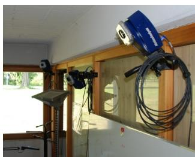
(a) Motion capture system
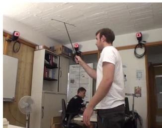
(b) Calibration procedure
Fig. 3. We use an external motion capture system from MotionAnalysis to track the camera pose of the Kinect.
Furthermore, we recorded two large tours through the industrial hall, partially with poor illumination and few visual features. In the “fr2/large no loop” sequence, special care was taken that no visual overlap exists in the trajectory. Our intention behind this was to provide a sequence for measuring the long-term drift of (otherwise loop closing) SLAM systems. In contrast, the “fr2/large with loop” sequence has a large overlap between the beginning and the end of the sequence, so that a large loop exists. It should be noted that these tours were so large that we had to leave the motion capture area in the middle of the industrial hall. As a result, ground truth pose information only exists in the beginning and in the end of the sequence.
d) Robot SLAM: We also recorded four sequences with a Kinect that was mounted on an ActivMedia Pioneer 3 robot (see Fig. 1d). With these sequences, it becomes possible to demonstrate the applicability of SLAM systems to wheeled robots. We aligned the Kinect horizontally, looking forward into the driving direction of the robot, so that the horizon was roughly located in the center of the image. Note that the motion of the Kinect is not strictly restricted to a plane because occasional tremors (as a result of bumps and wires on the floor) deflected the orientation of the Kinect. During recording, we joysticked the robot manually through the scene.
In the “fr2/pioneer 360” sequence, we drove the robot in a loop around the center of the (mostly) empty hall. Due to the large dimensions of the hall, the Kinect could not observe the depth of the distant walls for parts of the sequence. Furthermore, we set up a search-and-rescue scenario in the hall consisting of several office containers, boxes, and other feature-poor objects, see Fig. 2d. As a consequence, these sequences have depth, but are highly challenging for methods that rely on distinctive keypoints. In total, we recorded three sequences “fr2/pioneer slam”, “fr2/pioneer slam2”, and “fr2/pioneer slam3” that differ in the actual trajectories but all contain several loop closures.
IV. DATA ACQUISITION
All data was recorded at full resolution (640×480) and full frame rate (30 Hz) of the Microsoft Xbox Kinect sensor on a Linux laptop running Ubuntu 10.10 and ROS Diamondback. For recording the RGB-D data, we used two different off-theshelf Microsoft Kinect sensors (one for the “fr1” sequences, and a different sensor for the “fr2”). To access the color and depth images, we used the openni camera package in ROS which internally wraps PrimeSense’s OpenNI-driver [41]. As the depth image and the color image are observed from two different cameras, the observed (raw) images are initially not aligned. To this aim, the OpenNI-driver has an option to register the depth image to the color image using a Z-buffer automatically. This is implemented by projecting the depth image to 3D and subsequently back-projecting it into the view of the color camera. The OpenNI-driver uses for this registration the factory calibration stored on the internal memory. Additionally, we used the kinect aux driver to record the accelerometer data from the Kinect at 500 Hz.
To obtain the camera pose of the Kinect sensor, we used an external motion capture system from MotionAnalysis [42]. Our setup consists of eight Raptor-E cameras with a camera resolution of 1280×1024 pixels at up to 300 Hz (see Fig. 3a). The motion capture system tracks the 3D position of passive markers by triangulation. To enhance the contrast of these markers, the motion capture cameras are equipped with infrared LEDs to illuminate the scene. We verified that the Kinect and the motion capture system do not interfere: The motion capture LEDs appear as dim lamps in the Kinect infrared image with no influence on the produced depth maps, while the projector of the Kinect is not detected at all by the motion capture cameras.
Finally, we also video-taped all experiments with an external video camera to capture the camera motion and the scene from a different view point. All sequences and movies are available on our website [1].
V. FILE FORMATS, TOOLS AND SAMPLE CODE
Each sequence is provided as a single compressed TGZ archive which consists of the following files and folders:
• “rgb/”: a folder containing all color images (PNG format, 3 channels, 8 bit per channel),
• “depth/”: same for the depth images (PNG format, 1 channel, 16 bit per channel, distance in meters scaled by factor 5000),
• “rgb.txt”: a text file with a consecutive list of all color images (format: timestamp filename),
• “depth.txt”: same for the depth images (format: timestamp filename),
• “imu.txt”: a text file containing the timestamped accelerometer data (format: timestamp fx fy fz),
• “groundtruth.txt”: a text file containing the ground truth trajectory stored as a timestamped translation vector and unit quaternion (format: timestamp tx ty tz qx qy qz qw).
| Sequence Name | Duration [s] | Avg. Trans. Vel. [m/s] | Avg. Rot. Vel. [deg/s] |
| Testing and Debugging | |||
| fr1/xyz | 30 | 0.24 | 8.92 |
| fr1/rpy | 28 | 0.06 | 50.15 |
| fr2/xyz | 123 | 0.06 | 1.72 |
| fr2/rpy | 110 | 0.01 | 5.77 |
| Handheld SLAM | |||
| fr1/360 | 29 | 0.21 | 41.60 |
| fr1/floor | 50 | 0.26 | 15.07 |
| fr1/desk | 23 | 0.41 | 23.33 |
| fr1/desk2 | 25 | 0.43 | 29.31 |
| fr1/room | 49 | 0.33 | 29.88 |
| fr2/360_hemisphere | 91 | 0.16 | 20.57 |
| fr2/360_kidnap | 48 | 0.30 | 13.43 |
| fr2/desk | 99 | 0.19 | 6.34 |
| fr2/desk_with_person | 142 | 0.12 | 5.34 |
| fr2/large_no_loop | 112 | 0.24 | 15.09 |
| fr2/large_with_loop | 173 | 0.23 | 17.21 |
| Robot SLAM | |||
| fr2/pioneer_360 | 73 | 0.23 | 12.05 |
| fr2/pioneer_slam | 156 | 0.26 | 13.38 |
| fr2/pioneer_slam2 | 116 | 0.19 | 12.21 |
| fr2/pioneer_slam3 | 112 | 0.16 | 12.34 |
TABLE I
LIST OF AVAILABLE RGB-D SEQUENCES
| dataset | camera | fx | fy | CX | cy | |
| Freiburg 1 | color | 517.3 | 516.5 | 318.6 | 255.3 | |
| Freiburg 2 | infrared | 591.1 | 590.1 | 331.0 | 234.0 | |
| depth | ds = 1.035 | |||||
| color infrared | 520.9 580.8 | 521.0 | 325.1 | 249.7 | ||
| depth | ds = 1.031 | 581.8 | 308.8 | 253.0 |
TABLE II
INTRINSIC PARAMETERS OF THE COLOR AND INFRARED CAMERAS FOR THE TWO KINECTS USED IN OUR DATASET, INCLUDING THE FOCAL LENGTH (FX/FY) AND THE OPTICAL CENTER (CX/CY). FURTHERMORE, WE ESTIMATED A CORRECTION FACTOR FOR THE DEPTH VALUES (DS).
Furthermore, all sequences are also available in the ROS bag format1 and the rawlog format of the mobile robot programming toolkit (MRPT)2. Additionally, we provide a set of useful tools and sample code on our website for data association, evaluation and conversion [1].
VI. CALIBRATION AND SYNCHRONIZATION
All components of our setup, i.e., the color camera, depth sensor, motion capture system require intrinsic and extrinsic calibration. Furthermore, the time stamps of the sensor messages need to be synchronized, due to time delays in the pre-processing, buffering, and data transmission of the individual sensors.
A. Motion capture system calibration
We calibrated the motion capture system using the Cortex software provided by MotionAnalysis [42]. The calibration procedure requires waving a calibration stick with three markers extensively through the motion capture area, as illustrated in Fig. 3b. From these point correspondences, the system computes the poses of the motion capture cameras. To validate the result of this calibration procedure, we equipped a metal rod of approximately 2 m length with two reflective markers at both ends and checked whether its observed length was constant at different locations in the motion capture area. The idea behind this experiment is that if and only if the length of the metal rod is constant in all parts of the scene, then the whole motion capture area is Euclidean. In our experiment, we measured a standard deviation of 1.96 mm in the length of the stick over the entire motion capture area of 7 × 7From this and further experiments, we˙ conclude that the position estimates of the motion capture system are highly accurate, Euclidean and stable over time.
B. Kinect calibration
Next, we estimated the intrinsic camera parameters of both the color and the infrared camera using the OpenCV library from the “rgb” and “ir” calibration sequences. As a result of this calibration, we obtained the focal lengths (fx/fy), the optical center (cx/cy) and distortion parameters of both cameras. These parameters are summarized in Tab. II.
Secondly, we validated the depth measurements of the Kinect by comparing the depth of four distinct points on the checkerboard as seen in the RGB image. As can be seen in Fig. 4a, the values of both Kinects do not exactly match the real depth as computed by the checkerboard detector from the calibrated RGB camera, but have slightly different scale. The estimated correction factor for the depth images is given in Tab. II. We applied this correction factor already to the dataset, so that no further action from the users is required. We evaluated the residual noise in the depth values as a function of the distance to the checkerboard. The result of this experiment is depicted in Fig. 4b. As can be seen from this plot, the noise in the depth values is around 1 cm until 2 m distance and around 5 cm in 4 m distance. A detailed analysis of Kinect calibration and the resulting accuracy has been recently published by Smisek et al. [43].
C. Extrinsic calibration
For tracking a rigid body in the scene (like the Kinect sensor or the checkerboard), the motion capture system requires at least three reflective markers. In our experiments, we attached four reflective markers on each Kinect sensor (see Fig. 1c+1d) and five markers on the calibration checkerboard (see Fig. 5a). We placed four of the markers as accurately as possible on the outer corners of the checkerboard, such that the transformation between the visual checkerboard and the motion capture markers is known. Given these point observations and the point model, we can compute its pose with respect to the coordinate system of the motion capture system.
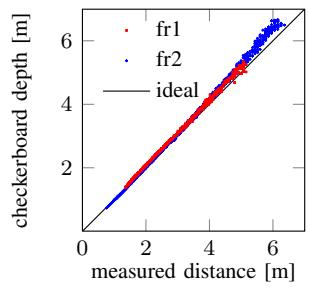
(a)
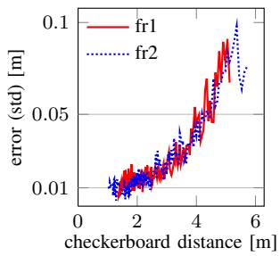
(b)
Fig. 4. (a) Validation of the depth values of the fr1 and fr2 sensor by means of a checkerboard and (b) analysis of the noise in the depth values with respect to the camera distance.
We measured the average error between the point observations and the model to 0.60 mm in the office (“fr1”) and 0.86 mm in the industrial hall (“fr2”). Given these noise values, we expect an error in the estimated orientations of around 0.34 deg and 0.49 deg, respectively. While this error is rather low, the reader should keep in mind that this means that reconstructed 3D models given the pose of the motion capture system – assuming a noise-free depth image for the moment – will have an error 30 mm and 43 mm, respectively in 5 m distance from the camera. Therefore, we emphasize that the pose estimates of the motion capture system cannot directly be used to generate (or evaluate) highly accurate 3D models of the scene. However, for evaluating the trajectory accuracy of visual SLAM systems, an absolute sub-millimeter and sub-degree accuracy is high enough to evaluate current (and potentially future) state-of the-art methods.
As the next calibration step, we estimated the transformation between the pose from the motion capture system and the optical frame of the Kinect using the calibration checkerboard. We validated our calibration by measuring the distance of the four corner points of the checkerboard as observed in the RGB image and the corner points predicted by the motion capture system. We measured an average error of 3.25 mm for the “fr1” Kinect and of 4.03 mm for the “fr2” Kinect. Note that these residuals contain both the noise induced by the motion capture system and the noise induced by the visual checkerboard detection. With respect to the high accuracy of the motion capture system, we attribute these errors mostly to (zero-mean) noise of the checkerboard detector.
From our measurements obtained during calibration, we conclude that the relative error on a frame-to-frame basis in the ground truth data is lower than 1 mm and 0.5 deg measured in the optical center of the Kinect. Furthermore, the absolute error over the whole motion capture area is lower than 10 mm and 0.5 deg. Therefore, we claim that our dataset is valid to assess the performance of visual odometry and visual SLAM systems as long as these systems have (RPE and ATE) errors significantly above these values.
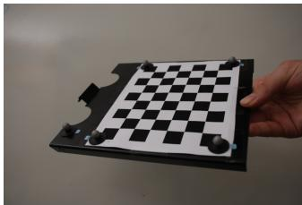
(a)
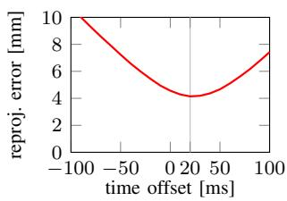
(b)
Fig. 5. (a) Checkerboard used for the calibration and the time synchronization. (b) Analysis of the time delay between the motion capture system and the color camera of the Kinect sensor.
D. Time synchronization
We determined the time delay between the motion capture system and the color camera of the Kinect using the same method, i.e., we evaluated the residuals for different time delays to determine the delay (see Fig. 5b). In this experiment, we found that the poses from the motion capture system were approximately 20 ms earlier than the color images of the Kinect. We corrected for this delay already in our dataset, so no further action is required by the user.
There is also a small time delay between the color and depth images as delivered by the Kinect. During the evaluation of our own SLAM and visual odometry systems, we found that the depth images arrive on average around 20 ms later than the color images. However, we decided to keep the unmodified time stamps of color and depth images in the dataset. To simplify the association of color and depth images for the user, we provide the “associate.py” script that outputs pairs of color and depth images according to the users preferences (such as time offset and maximum time difference).
Another challenge in the image data that users should keep in mind is that the Kinect uses a rolling shutter for the color camera which can lead to image distortions when the camera is moved quickly. As the Kinect automatically chooses the exposure time depending on the scene illumination, the strength of this effect can vary significantly in some of the sequences in the dataset.
VII. EVALUATION METRICS
A SLAM system generally outputs the estimated camera trajectory along with an estimate of the resulting map. While it is in principle possible to evaluate the quality of the resulting map, accurate ground truth maps are difficult to obtain. Therefore, we propose to evaluate the quality of the estimated trajectory from a given input sequence of RGB-D images. This approach simplifies the evaluation process greatly. Yet, it should be noted that a good trajectory does not necessarily imply a good map, as for example even a small error in the map could prevent the robot from working in the environment (obstacle in a doorway).
For the evaluation, we assume that we are given a sequence of poses from the estimated trajectory and from the ground truth trajectory For simplicity of notation, we assume that the sequences are time-synchronized, equally sampled, and both have length n. In practice, these two sequences have typically different sampling rates, lengths and potentially missing data, so that an additional data association and interpolation step is required. Both sequences consist of homogeneous transformation matrices that express the pose of the RGB optical frame of the Kinect from an (arbitrary) reference frame. This reference frame does not have to be the same for both sequences, i.e., the estimated sequence might start in the origin, while the ground truth sequence is an absolute coordinate frame which was defined during calibration. While, in principle, the choice of the reference frame on the Kinect is also arbitrary, we decided to use the RGB optical frame as the reference because the depth images in our dataset have already been registered to this frame. In the remainder of this section, we define two common evaluation metrics for visual odometry and visual SLAM evaluation. For both evaluation metrics, we provide easy-to-use evaluation scripts for download on our website as well as an online version of this script to simplify and standardize the evaluation procedure for the users.
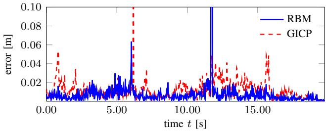
Fig. 6. Evaluating the drift by means of the relative pose error (RPE) of two visual odometry approaches on the fr1/desk sequence. As can be seen from this plot, RBM is has lower drift and fewer outliers than GICP. For more details, see [44].
A. Relative pose error (RPE)
The relative pose error measures the local accuracy of the trajectory over a fixed time interval Therefore, the relative pose error corresponds to the drift of the trajectory which is in particular useful for the evaluation of visual odometry systems. We define the relative pose error at time step i as
From a sequence of n camera poses, we obtain in this way individual relative pose errors along the sequence. From these errors, we propose to compute the root mean squared error (RMSE) over all time indicies of the translational component as
where refers to the translational components of the relative pose error . It should be noted that some researchers prefer to evaluate the mean error instead of the root mean squared error which gives less influence to outliers. Alternatively, it is also possible to compute the median instead of the mean, which attributes even less influence to outliers. If desired, additionally the rotational error can be evaluated, but usually we found the comparison by translational errors to be sufficient (as rotational errors show up as translational errors when the camera is moved). Furthermore, the time parameter needs to be chosen. For visual odometry systems that match consecutive frames, 1 is an intuitive choice; then gives the drift per frame. For systems that use more than one previous frame, larger values of can also be appropriate, for example, for gives the drift per second on a sequence recorded at 30 Hz. It should be noted that a common (but poor) choice is to set which means that the start point is directly compared to the end point. This metric can be misleading as it penalizes rotational errors in the beginning of a trajectory more than towards the end [37], [45]. For the evaluation of SLAM systems, it therefore makes sense to average over all possible time intervals , i.e., to compute
Note that the computational complexity of this expression is quadratic in the trajectory length. Therefore, we propose to approximate it by computing it from a fixed number of relative pose samples. Our automated evaluation script allows both the exact evaluation as well as the approximation for a given number of samples.
An example of the relative pose error is given in Fig. 6. Here, the relative pose errors have been evaluated for two visual odometry approaches [44]. As can be seen from this figure, the RBM method has both lower drift and fewer outliers compared to GICP.
B. Absolute trajectory error (ATE)
For visual SLAM systems, additionally the global consistency of the estimated trajectory is an important quantity. The global consistency can be evaluated by comparing the absolute distances between the estimated and the ground truth trajectory. As both trajectories can be specified in arbitrary coordinate frames, they first need to be aligned. This can be achieved in closed form using the method of Horn [46], which finds the rigid-body transformation S corresponding to the least-squares solution that maps the estimated trajectory onto the ground truth trajectory . Given this transformation, the absolute trajectory error at time step i can be computed as
Similar to the relative pose error, we propose to evaluate the root mean squared error over all time indices of the translational components, i.e.,
A visualization of the absolute trajectory error is given in Fig. 7a. Here, RGB-D SLAM [47] was used to estimate the camera trajectory from the “fr1/desk2” sequence.
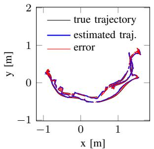
(a)
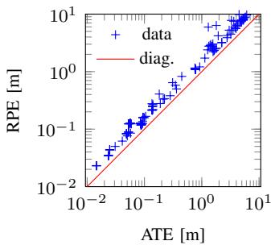
(b)
Fig. 7. (a) Visualization of the absolute trajectory error (ATE) on the “fr1/desk2” sequence. (b) Comparison of ATE and RPE measures. Both plots were generated from trajectories estimated by the RGB-D SLAM system [47].
Alternatively, also the RPE can be used to evaluate the global error of a trajectory by averaging over all possible time intervals. Note that the RPE considers both translational and rotational errors, while the ATE only considers the translational errors. As a result, the RPE is always slightly larger than the ATE (or equal if there is no rotational error). This is also visualized in Fig. 7b, where both the RPE and the ATE were computed on various estimated trajectories from the RGB-D SLAM system. Therefore, the RPE metric provides an elegant way to combine rotational and translational errors into a single measure. However, rotational errors typically also manifest themselves in wrong translations and are thus indirectly also captured by the ATE. From a practical perspective, the ATE has an intuitive visualization which facilitates visual inspection. Nevertheless the two metrics are strongly correlated: In all our experiments we never encountered a substantial difference between the situations in which RPE and ATE were used. In fact, often the relative order remained the same independently from which measure was actually used.
VIII. CONCLUSIONS
In this paper, we presented an benchmark for the evaluation of RGB-D SLAM systems. The dataset contains color images, depth maps, and associated ground-truth camera pose information. Further, we proposed two evaluation metrics that can be used to assess the performance of a visual odometry and visual SLAM system. Accurate calibration and rigorous validation ensures the high quality of the resulting dataset. We approved the validity of our dataset and the corresponding evaluation metrics by the evaluation of our own recent approaches [44], [47]. To conclude, we presented a high-quality dataset with a suitable set of evaluation metrics that constitutes a full benchmark for the evaluation of visual SLAM systems.
ACKNOWLEDGEMENTS
The authors would like to thank Jorg M¨ uller and Michael¨ Ruhnke for their help and support with the motion capture system. Furthermore, we thank Frank Steinbrucker, Rainer¨ Kummerle, St¨ ephane Magnenat, Franc¸is Colas, and Franc¸ois´
Pomerleau for the fruitful discussions. We also thank Jose Luis Blanco for making our datasets available to users of the Mobile Robot Programming Toolkit (MRPT) by converting them to the RAWLOG format.
REFERENCES
[1] http://vision.in.tum.de/data/datasets/rgbd-dataset.
[2] P. Henry, M. Krainin, E. Herbst, X. Ren, and D. Fox, “RGB-D mapping: Using depth cameras for dense 3D modeling of indoor environments,” in Intl. Symp. on Experimental Robotics (ISER), 2010.
[3] N. Engelhard, F. Endres, J. Hess, J. Sturm, and W. Burgard, “Realtime 3D visual SLAM with a hand-held RGB-D camera,” in RGB-D Workshop on 3D Perception in Robotics at the European Robotics Forum, 2011.
[4] C. Audras, A. Comport, M. Meilland, and P. Rives, “Real-time dense appearance-based SLAM for RGB-D sensors,” in Australasian Conf. on Robotics and Automation, 2011.
[5] R. Newcombe, S. Izadi, O. Hilliges, D. Molyneaux, D. Kim, A. Davison, P. Kohli, J. Shotton, S. Hodges, and A. Fitzgibbon, “KinectFusion: Real-time dense surface mapping and tracking,” in Intl. Symposium on Mixed and Augmented Reality (ISMAR), 2011.
[6] F. Lu and E. Milios, “Globally consistent range scan alignment for environment mapping,” Autonomous Robots, vol. 4, no. 4, pp. 333– 349, 1997.
[7] F. Dellaert, “Square root SAM,” in Proc. of Robotics: Science and Systems (RSS), Cambridge, MA, USA, 2005.
[8] E. Olson, J. Leonard, and S. Teller, “Fast iterative optimization of pose graphs with poor initial estimates,” in IEEE Intl. Conf. on Robotics and Automation (ICRA), 2006.
[9] G. Klein and D. Murray, “Parallel tracking and mapping for small AR workspaces,” in IEEE and ACM Intl. Symposium on Mixed and Augmented Reality (ISMAR), 2007.
[10] M. Kaess, A. Ranganathan, and F. Dellaert, “iSAM: Incremental smoothing and mapping,” IEEE Trans. on Robotics, TRO, vol. 24, no. 6, pp. 1365–1378, Dec 2008.
[11] G. Grisetti, C. Stachniss, and W. Burgard, “Non-linear constraint network optimization for efficient map learning,” IEEE Transactions on Intelligent Transportation systems, vol. 10, no. 3, pp. 428–439, 2009.
[12] R. Kummerle, G. Grisetti, H. Strasdat, K. Konolige, and W. Bur-¨ gard, “g2o: A general framework for graph optimization,” in IEEE Intl. Conf. on Robotics and Automation (ICRA), 2011.
[13] H. Jin, P. Favaro, and S. Soatto, “Real-time 3-D motion and structure of point features: Front-end system for vision-based control and interaction,” in IEEE Conf. on Computer Vision and Pattern Recognition (CVPR), 2000.
[14] M. Pollefeys and L. Van Gool, “From images to 3D models,” Commun. ACM, vol. 45, pp. 50–55, July 2002.
[15] D. Nister, “Preemptive ransac for live structure and motion estimation,”´ Machine Vision and Applications, vol. 16, pp. 321–329, 2005.
[16] J. Stuhmer, S. Gumhold, and D. Cremers, “Real-time dense geometry¨ from a handheld camera,” in DAGM Symposium on Pattern Recognition (DAGM), 2010.
[17] M. Montemerlo, S. Thrun, D. Koller, and B. Wegbreit, “FastSLAM: A factored solution to the simultaneous localization and mapping problem,” in Prof. of the National Conf. on Artificial Intelligence (AAAI), 2002.
[18] G. Grisetti, C. Stachniss, and W. Burgard, “Improved techniques for grid mapping with rao-blackwellized particle filters,” IEEE Transactions on Robotics (T-RO), vol. 23, pp. 34–46, 2007.
[19] A. Nuchter, K. Lingemann, J. Hertzberg, and H. Surmann, “6D SLAM ¨ – 3D mapping outdoor environments: Research articles,” J. Field Robot., vol. 24, pp. 699–722, August 2007.
[20] M. Magnusson, H. Andreasson, A. Nuchter, and A. Lilienthal, “Auto-¨ matic appearance-based loop detection from 3D laser data using the normal distributions transform,” Journal of Field Robotics, vol. 26, no. 11–12, pp. 892–914, 2009.
[21] A. Segal, D. Haehnel, and S. Thrun, “Generalized-icp,” in Robotics: Science and Systems (RSS), 2009.
[22] K. Koeser, B. Bartczak, and R. Koch, “An analysis-by-synthesis camera tracking approach based on free-form surfaces,” in German Conf. on Pattern Recognition (DAGM), 2007.
[23] K. Konolige and J. Bowman, “Towards lifelong visual maps,” in IEEE/RSJ Intl. Conf. on Intelligent Robots and Systems (IROS), 2009.
[24] H. Strasdat, J. Montiel, and A. Davison, “Scale drift-aware large scale monocular SLAM,” in Proc. of Robotics: Science and Systems (RSS), 2010.
[25] K. Konolige, M. Agrawal, R. Bolles, C. Cowan, M. Fischler, and B. Gerkey, “Outdoor mapping and navigation using stereo vision,” in Intl. Symp. on Experimental Robotics (ISER), 2007.
[26] A. Comport, E. Malis, and P. Rives, “Real-time quadrifocal visual odometry,” Intl. Journal of Robotics Research (IJRR), vol. 29, pp. 245–266, 2010.
[27] C. Stachniss, P. Beeson, D. Hahnel, M. Bosse, J. Leonard,¨ B. Steder, R. Kummerle, C. Dornhege, M. Ruhnke, G. Grisetti,¨ and A. Kleiner, “Laser-based SLAM datasets.” [Online]. Available: http://OpenSLAM.org
[28] “The Rawseeds project,” http://www.rawseeds.org/rs/datasets/.
[29] M. Smith, I. Baldwin, W. Churchill, R. Paul, and P. Newman, “The new college vision and laser data set,” Intl. Journal of Robotics Research (IJRR), vol. 28, no. 5, pp. 595–599, 2009.
[30] A. Geiger, P. Lenz, and R. Urtasun, “Are we ready for autonomous driving? the KITTI vision benchmark suite,” in IEEE Conf. on Computer Vision and Pattern Recognition (CVPR), Providence, USA, June 2012.
[31] F. Pomerleau, S. Magnenat, F. Colas, M. Liu, and R. Siegwart, “Tracking a depth camera: Parameter exploration for fast ICP,” in IEEE/RSJ Intl. Conf. on Intelligent Robots and Systems (IROS), 2011.
[32] S. Bao and S. Savarese, “Semantic structure from motion,” in IEEE Intl. Conf. on Computer Vision and Pattern Recognition (CVPR), 2011.
[33] J. Sturm, S. Magnenat, N. Engelhard, F. Pomerleau, F. Colas, W. Burgard, D. Cremers, and R. Siegwart, “Towards a benchmark for RGB-D SLAM evaluation,” in RGB-D Workshop on Advanced Reasoning with Depth Cameras at RSS, June 2011.
[34] E. Olson and M. Kaess, “Evaluating the performance of map optimization algorithms,” in RSS Workshop on Good Experimental Methodology in Robotics, 2009.
[35] R. Vincent, B. Limketkai, M. Eriksen, and T. De Candia, “SLAM in real applications,” in RSS Workshop on Automated SLAM Evaluation, 2011.
[36] K. Konolige, M. Agrawal, and J. Sola, “Large scale visual odometry` for rough terrain,” in Intl. Symposium on Robotics Research (ISER), 2007.
[37] R. Kummerle, B. Steder, C. Dornhege, M. Ruhnke, G. Grisetti,¨ C. Stachniss, and A. Kleiner, “On measuring the accuracy of SLAM algorithms,” Autonomous Robots, vol. 27, pp. 387–407, 2009.
[38] W. Burgard, C. Stachniss, G. Grisetti, B. Steder, R. Kummerle,¨ C. Dornhege, M. Ruhnke, A. Kleiner, and J. Tardos, “A comparison´ of SLAM algorithms based on a graph of relations,” in IEEE/RSJ Intl. Conf. on Intelligent Robots and Systems (IROS), 2009.
[39] W. Wulf, A. Nuchter, J. Hertzberg, and B. Wagner, “Ground truth¨ evaluation of large urban 6D SLAM,” in IEEE/RSJ Intl. Conf. on Intelligent Robots and Systems (IROS), 2007.
[40] S. Baker, D. Scharstein, J. Lewis, S. Roth, M. Black, and R. Szeliski, “A database and evaluation methodology for optical flow,” Intl. Journal of Computer Vision (IJCV), vol. 92, no. 1, 2011.
[41] PrimeSense, Willow Garage, SideKick and Asus, “Introducing OpenNI,” http://http://www.openni.org.
[42] MotionAnalysis, “Raptor-E Digital RealTime System,” http://www.motionanalysis.com/html/industrial/raptore.html.
[43] J. Smisek, M. Jancosek, and T. Pajdla, “3D with Kinect,” in ICCV Workshop on Consumer Depth Cameras for Computer Vision, 2011.
[44] F. Steinbrucker, J. Sturm, and D. Cremers, “Real-time visual odometry¨ from dense RGB-D images,” in ICCV Workshop on Live Dense Reconstruction with Moving Cameras, 2011.
[45] A. Kelly, “Linearized error propagation in odometry,” Intl. Journal of Robotics Research (IJRR), vol. 23, no. 2, 2004.
[46] B. Horn, “Closed-form solution of absolute orientation using unit quaternions,” Journal of the Optical Society of America A, vol. 4, pp. 629–642, 1987.
[47] F. Endres, J. Hess, N. Engelhard, J. Sturm, D. Cremers, and W. Burgard, “An evaluation of the RGB-D SLAM system,” in IEEE Intl. Conf. on Robotics and Automation (ICRA), 2012.
md/2012_A_benchmark_for_the_evaluation_of_RGB-D_SLAM_systems.md 预渲染生成（OCR 语料，插图取自原文）。
公式以 MathML 呈现，浏览器原生渲染，不依赖外部脚本或字体 CDN。